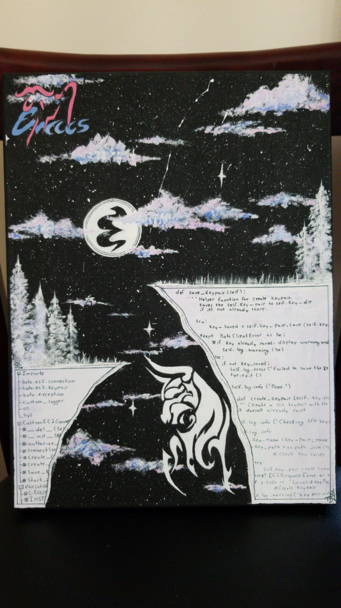

org-special-block-extras: Write Once, Export Everywhere


⭐ The code lives at github.com/alhassy/org-special-block-extras —star it, or discuss it there! 

Tired of repeating yourself when writing in Org-mode for LaTeX and HTML
exports? org-special-block-extras is your magical toolkit for
creating custom Org-mode blocks and links that work seamlessly
across backends —without diving into the dark arts of raw HTML or
LaTeX!
Reading in glare? —a pale color soothes the eyes.
1. 🎁 What Does It Do?
- 🎨 Style with ease — add colors, badges, tooltips (from a dictionary, Emacs Help, or custom file), keystroke notations, inline editorial comments, or even colorful ASCII cows with fortune cookies.
- 📚 Glossary support — embed hoverable documentation with
doc:links and auto-generated glossaries. - 📦 Add interactive content: from collapsible detail sections and parallel columns to spoiler tags and equational proofs.
- 🎛 Switch any block:
:when (eq backend 'html),:noexport t,:let (N 7),:boxed "Title",:folded t, and:verbatim t, and:C-c_C-c ACTIONwork on every block —ours, yours, or Org's own src and quote blocks; and, as properties, on every section, e.g.,:when: (eq backend 'html); see switches. Use badge-style links to embed GitHub stars, Reddit subs, or custom project metadata via
shields.io.- 🛠 Use
org-defblock,org-deflinkandorg-deftag—Org, extended as one extends Lisp: each is declared like acl-defun, with&optionaland&keyarguments.- Create powerful custom blocks with
org-defblock: Define a block once and export to LaTeX and HTML effortlessly. With header-args support like:color red :signoff "Thanks!"for locally customised exports. Each block is also a link and a tag, for free; and:fontifysays how it looks in the buffer. - Use
org-deflinkto create custom links, as functions of their label and description. - Use
org-deftagto create custom tags, as functions of the Org sections they tag.
- Create powerful custom blocks with
🧱 Ready-to-Use Custom Blocks
| Block | Use Case |
|---|---|
details |
Foldable sections — perfect for hiding spoilers, proofs, or long explanations. |
parallel |
Display content in multiple columns — great for comparisons or saving space. |
margin |
Add subtle explanatory tooltips or side remarks — delightful for scholarly writing. |
box |
Emphasize content with nicely styled borders — great for callouts or side notes. |
spoiler |
Hide content visually until the reader chooses to see it — useful in teaching. |
tree |
Display proof trees and logical derivations — fantastic for formal logic. |
stutter |
Repeat content multiple times — e.g., for emphasis or stylistic flair. |
solution |
Reveal answers in stages — perfect for educational content. |
math |
Display maths wherein red:𝒳 colors a symbol; calculational proofs, with hints. |
graph |
Draw nested Org lists as Graphviz diagrams — C-c C-c renders a PNG in place. |
smartdiagram |
Typeset an Org list as LaTeX's smartdiagram: a planet amid satellites, a flow, … |
image LANG |
LaTeX, HTML, SVG, dot, PlantUML, Mermaid, D2, or p5.js: itself, else a picture. |
note, tip, warning, … |
GitHub-style callouts —a colored rule and a titled heading. |
highlight |
Color a paragraph's background, rather than its text. |
Ready-to-Use Custom Links
| Link | Purpose |
|---|---|
doc:label |
Glossary tooltips —e.g., cl-loopThe Common Lisp ‘loop’ macro.
Valid clauses include:
For clauses:
for VAR from/upfrom/downfrom EXPR1 to/upto/downto/above/below EXPR2
[by EXPR3]
for VAR = EXPR1 then EXPR2
for VAR in/on/in-ref LIST [by FUNC]
for VAR across/across-ref ARRAY
for VAR being:
the elements of/of-ref SEQUENCE [using (index VAR2)]
the symbols [of OBARRAY]
the hash-keys/hash-values of HASH-TABLE [using (hash-values/hash-keys V2)]
the key-codes/key-bindings/key-seqs of KEYMAP [using (key-bindings VAR2)]
the overlays/intervals [of BUFFER] [from POS1] [to POS2]
the frames/buffers
the windows [of FRAME]
Iteration clauses:
repeat INTEGER
while/until/always/never/thereis CONDITION
Accumulation clauses:
collect/append/nconc/concat/vconcat/count/sum/maximize/minimize FORM
[into VAR]
Miscellaneous clauses:
with VAR = INIT
if/when/unless COND CLAUSE [and CLAUSE]... else CLAUSE [and CLAUSE...]
named NAME
initially/finally [do] EXPRS...
do EXPRS...
[finally] return EXPR
For more details, see Info node ‘(cl)Loop Facility’.
(fn CLAUSE...); our own terms, even <<<radio targets>>>, too |
kbd: |
Stylized keybindings with tooltips — e.g., kbd:C-x_C-e; in Emacs, 〔C-x C-e〕, click to run |
color: or red: |
Inline text coloring — supports both names and hex codes. |
highlight: |
Color the background instead —so highlighted in Emacs too. |
palette: |
A button for readers to pick the page's background color. |
toggle-details: |
A button to unfold, or fold, every details block at once. |
badge: |
Embed project badges — e.g., GitHub stars, Reddit subs, versioning. |
fortune: |
Insert ASCII animals saying jokes or phrases — joy in your docs! |
<<X>> |
Permalinks — Org's own targets, made a visible 🔗 in HTML. |
elisp: |
Make clickable actions — buttons that run Emacs Lisp. |
Org's own elisp: links evaluate Lisp; e.g., [[elisp:(find-file user-init-file)][Init]] is a
“link button” that visits our init file. Yet they do not export the value of their expression;
for that, Org's own inline src blocks serve: src_elisp[:results raw]{user-full-name} exports as
Musa Al-hassy on my machine, and src_elisp{(* 2 (+ 3 4))} as 14. As for any Babel code, Org
asks before running a stranger's Lisp; see org-confirm-babel-evaluate.
💡 Ideal For
- 🧑🏫 Educators building interactive lessons and glossaries
- 🧑💻 Developers documenting APIs with style
- 📚 Writers crafting scholarly or explorable documents
- ✨ Emacsers who want rich export without leaving Org-mode
- ✏️ Bloggers wanting powerful interactivity
- This is the reason I made this package.
- 1️⃣ Anyone who wants to keep Org-mode as the single source of truth for rich exports
🪄 Just load the package, write in Org, and let defblock handle the
rest. Now your Org-mode documents are not just structured —they're
spectacular.
Write rich Org-mode documents — one source, many formats.
The org-special-block-extras package empowers you to define and use
custom blocks and links that make your Org files export beautifully
to both HTML and LaTeX, without ever writing raw HTML or LaTeX
again.
2. 🗺 The package at a glance
Every node below leads to its section; hover, or tap, one for its gist. The map is itself a graph
block —an Org list, colored by #+name: tables folded in its :TEMPLATES: drawer, and laid out radially by :layout twopi.
Blocks, links, and switches for Org, exported alike to HTML, LaTeX, and Markdown.
GitHub's alerts: a colored rule and a titled heading; Markdown gets the alerts themselves.
Draw attention to text, fold it away, or set ideas side by side.
Notes that stay out of the reader's way: in the margin in LaTeX, hovered or tapped in HTML. Org's own footnotes join them.
19 named colors, each a block and a link, and a highlight that colors the background.
Display maths wherein red:𝒳 colors a symbol, aligned at &, with colored tags that @@html:<a href"osbe-link:𝒳">@@𝒳= cites; calculational proofs, their hints folded by TAB; and proof trees, as Org lists.
Org lists drawn by Graphviz —this very map is one— or typeset by LaTeX's smartdiagram.
LaTeX, HTML, SVG, dot, PlantUML, Mermaid, D2, or a p5.js sketch: itself where read natively, else a picture; a sketch runs in the page, and atop the block upon C-c C-c.
Define a term once —even as Org's own <>, whose every mention is then a tooltip— and cite it everywhere with doc:𝒳; #+print_glossary: lists every citation.
A term's definition as a tooltip.
Keys as keycaps, their command's documentation as a tooltip; click one in Emacs to run it.
Shields.io badges, for a project's README.
Make a link NAME whose export is presented as an SVG badge.
If the link is intend to be a social badge, then, adhering to
shield.io conventions, the appropriate SOCIAL-SHIELDS-NAME must
be given.
The SOCIAL-URL is a URL that the badge points to and it should
have a single ‘%s’ where the link label argument will go.
Some social badges have a uniform URL, but otherwise, such as
twitter, deviate and so need their own SOCIAL-SHIELDS-URL,
which has a single ‘%s’ for the link’s label argument.
----------------------------------------------------------------------
E.g., to create a badge named “go”:
(org-make-badge "go")
Then the following exports nicely from an Org file:
go:key|value|blue||gnu-emacs
(fn NAME &optional SOCIAL-SHIELDS-NAME SOCIAL-URL SOCIAL-SHIELDS-URL)
red:𝒳, [[box:Title][…]], and the like: a block's one-line form.
Export a block only for some backends, or never.
Substitute variables beforehand; or drop the block's behaviour, keeping its text.
Box the result, or fold it away; on src and quote blocks too.
Show the block's source; with demo, beside its result.
A block's action: render a graph, run a :C-cC-c form.
Edit any special block's contents in a buffer of their own.
Split any special block in two at point.
Hover a #+begin_ line, or a link, for its arguments and gist.
A block, its link, and its tag, from one cl-defun-style definition.
A link type: how it looks in Emacs and how it exports.
A heading tag as a function of its section.
Compose blocks: solution is details of a box of details.
(BODY, (b₁ a₁ …), …, (bₙ aₙ …)) ↦ BODY in block b₁, that in b₂, …, that in bₙ. (fn BODY &rest FORMS)
May a document's :when, :let, and :C-cC-c run Lisp? Ask, by default.
Inline the tooltips' CSS and JS in HTML exports; on, by default.
Org files whose glossary entries every document may cite.

Life & Computing Science by Musa Al-hassy is licensed under a Creative Commons Attribution-ShareAlike 3.0 Unported License